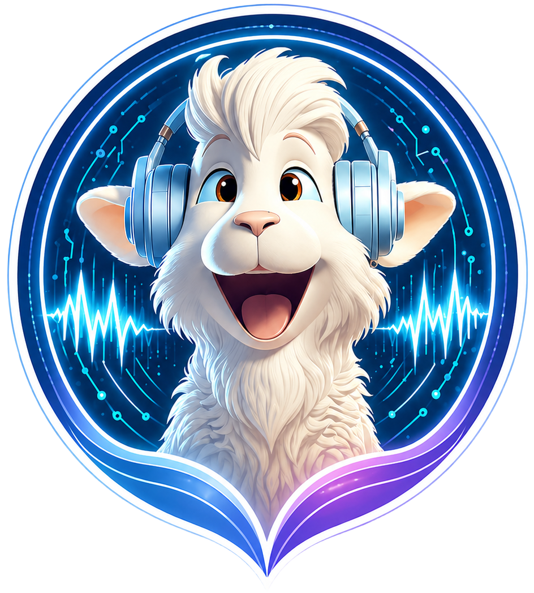
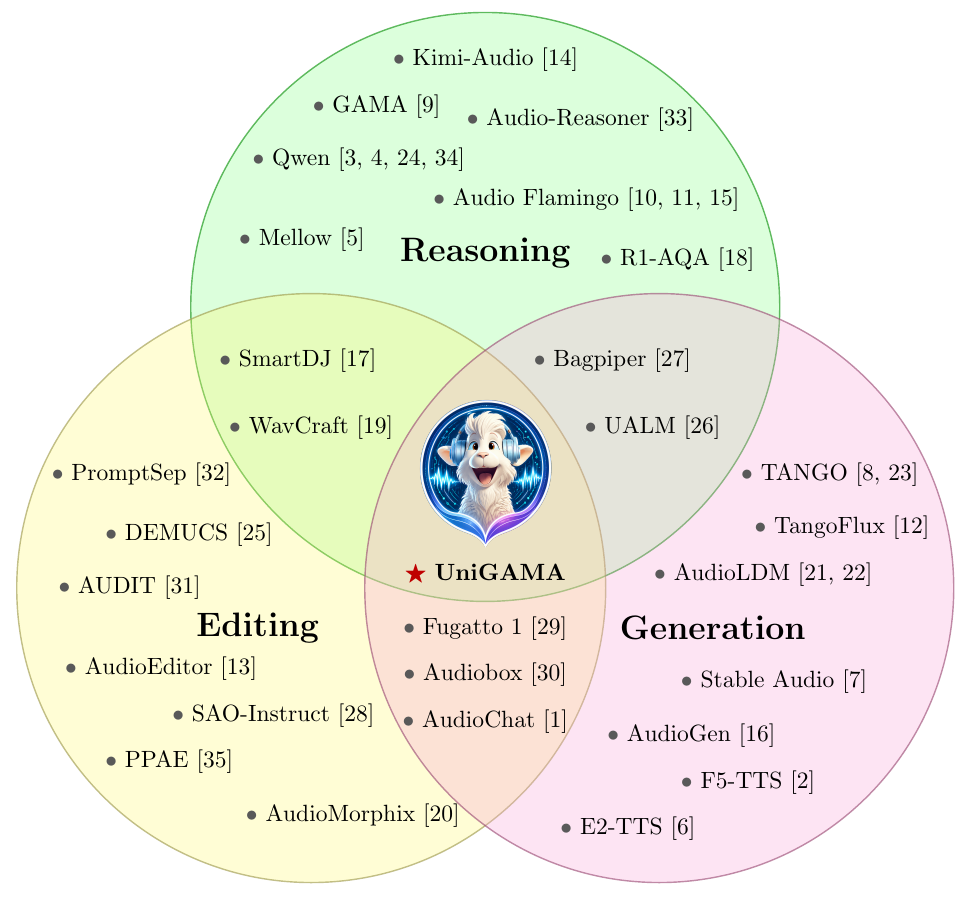
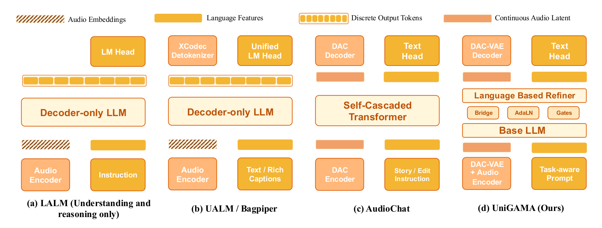
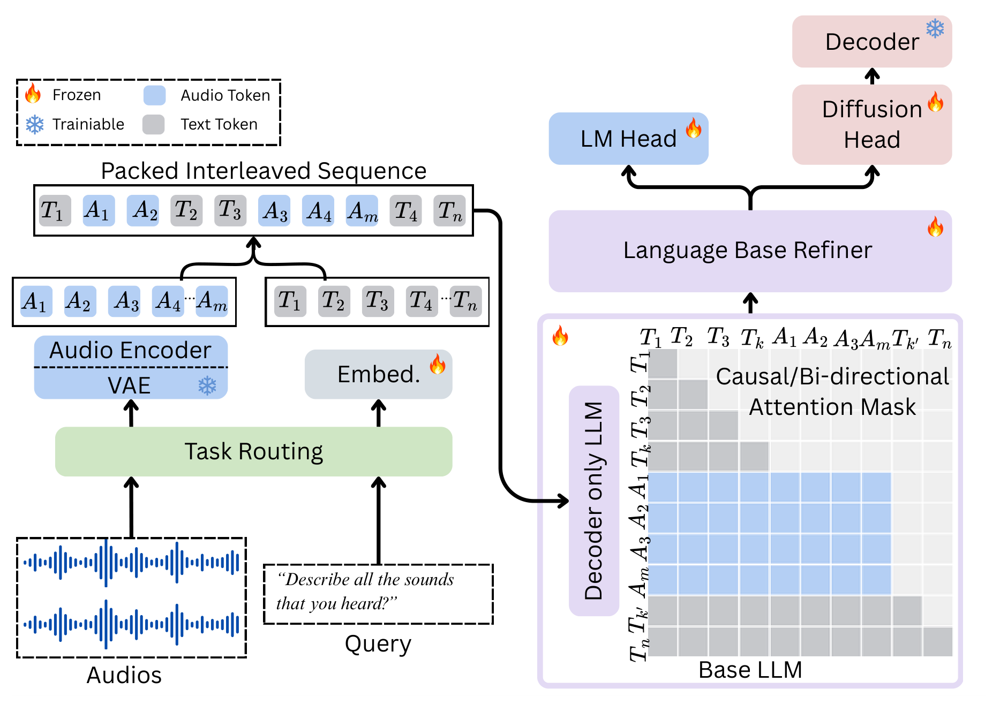
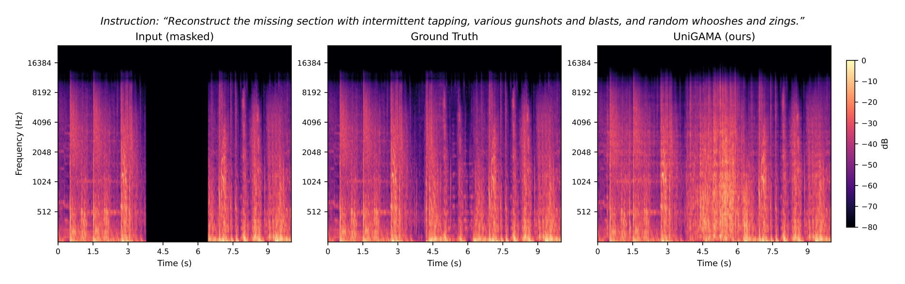

One model for audio understanding and generation
UniGAMA unifies audio-to-text understanding, audio reasoning, text-to-audio generation, and text-guided audio editing in a single decoder-only architecture.

Unified Generative Audio Model Architecture
A unified audio-language model for understanding, reasoning, generation, and editing. UniGAMA brings audio-to-text reasoning, text-to-audio synthesis, and text-guided editing into one continuous-latent decoder-only model.

Why UniGAMA
Audio systems are usually split between understanding models that cannot synthesize audio and generators that cannot reason about audio. UniGAMA closes that gap by training a shared language backbone and latent audio generator together, using one sequence format and one set of model weights.
UniGAMA unifies audio-to-text understanding, audio reasoning, text-to-audio generation, and text-guided audio editing in a single decoder-only architecture.
Instead of autoregressing over discrete codec tokens, UniGAMA predicts conditional-flow velocity over DAC-VAE latents, preserving a high-fidelity continuous audio path.
The generation pathway preserves pretrained language representations through multilevel hidden-state bridges, token-type adaptive layer normalization, and per-head attention gates. Every added module is zero-initialized, so the refiner starts as an identity-like pass over the base model.
Packed text and audio sequences share one forward pass while combining next-token prediction with conditional flow matching under task-aware attention and diffusion-loss schedules.

Results Snapshot
UniGAMA is evaluated on audio reasoning benchmarks, text-to-audio generation, instruction-guided editing, audio captioning, ASR, and TTS. Lower is better for FD, KL, FAD, LSD, and WER; higher is better for the remaining metrics. All numbers are for the 8B model.
| Area | Task | Metric | UniGAMA |
|---|---|---|---|
| Audio reasoning | MMAU | Sound / Music / Speech / Avg | 77.4 / 63.6 / 69.3 / 70.1 |
| Audio reasoning | MMAR | Accuracy | 59.4 |
| Audio reasoning | MMAU-Pro | Accuracy | 53.4 |
| Audio reasoning | MMSU | Accuracy | 70.61 |
| Text-to-audio | AudioCaps | FD / KL / IS / CL / AES | 77.62 / 1.41 / 16.30 / 0.58 / 4.44 |
| Editing | AudioEdit | FAD / LSD averaged over add, remove, style transfer | 3.01 / 2.47 |
| Captioning | AudioCaps | METEOR / CIDEr / SPICE / FENSE | 23.4 / 69.2 / 16.9 / 61.4 |
| Captioning | Clotho | METEOR / CIDEr / SPICE / FENSE | 17.6 / 44.5 / 12.8 / 54.2 |
| Speech | LibriTTS ASR | WER lower is better | 4.70 |
| Speech | LibriTTS TTS | Whisper WER lower is better | 3.05 |
Audio Demos
Each card shows the prompt and the available input, generated output, and reference audio. The first group covers tasks the paper trains and evaluates. The second group is exploratory work on control-conditioned generation that the paper does not cover.
Reproduce this audio without any changes.
Play this audio backwards.
Ongoing Work
Conditioning generation on MIDI and on sung or spoken sketches is an extension we are still exploring. These clips are illustrative only: this work is not part of the training mixture, the data tables, or any evaluation in the paper, and no numbers are claimed for it.
Tech house drum loop.
Warm pad melody.
Render the MIDI performance as an instrument sound.
Render the MIDI performance as an instrument sound.
Architecture
UniGAMA combines next-token prediction for text with conditional flow matching for audio latents, trained in one forward pass across three task families: audio-to-text, text-to-audio, and audio-to-audio. A task-aware attention mask keeps language causal while allowing audio spans to use bidirectional latent context during generation and editing.

Every clip, input or target, enters as a 128-dimensional continuous latent from a frozen 48 kHz DAC-VAE encoder, so one representation serves all three task families. For understanding turns only, a pooled vector from a frozen Qwen3-Omni encoder is added as a global semantic prior.
Qwen3-4B-Base provides the shared decoder-only backbone for prompts, answers, captions, and task instructions. With the refiner and the small added modules, UniGAMA totals 8B parameters.
The Language-Bridged Refiner is a second pass over the same backbone, built from every second layer. It reads hidden states from three depths of the base pass, so generation draws on intermediate features rather than the final layer alone.
Generation solves the learned flow ODE in 50 midpoint steps. Three-branch guidance separates text from source-audio conditioning, and edit-mode partial noising starts from the source latent so the instruction reshapes existing audio instead of replacing it.
Ongoing Work
Beyond the tasks in the paper, we are exploring whether the same continuous-latent pathway can follow frame-aligned control signals: symbolic MIDI on one side, and rough human sketches such as humming, beatboxing, or tapping on the other. The demos above give a sense of where this currently stands.
This extension is not part of the training mixture, the data tables, the ablations, or any evaluation in the current paper. We report no benchmark numbers for it, and the clips should be read as work in progress rather than as a claimed capability.
For everything the paper does train and measure, see the results and data sections.
Data Mixture
Pretraining draws 4.54M samples from AudioSet, LibriVox, Common Voice, and Dolma v3, mixed at a 2:2:1 ratio of text-to-audio, audio-to-text, and plain language modeling, the last preserving the backbone's reasoning ability. Supervised fine-tuning adds 3.96M samples of editing, preservation, inpainting, scene mixing, speech transfer, and audio question answering.

Training Pipeline
UniGAMA uses staged training to stabilize the shared language and audio objectives. Every module the refiner adds is zero-initialized, so training starts from an identity-like pass over the base model and specializes only as the flow-matching loss takes effect.
Train the unified language and latent-generation path on a 4.54M-sample mixture of audio-to-text, text-to-audio, ASR, TTS, and language-modeling data at a 2:2:1 T2A:A2T:text ratio. This stage carries no audio-to-audio data; editing supervision begins only in Stage 2.
Instruction-tune on 3.96M samples covering text-guided editing, preservation, inpainting, scene mixing, emotional and conversational speech transfer, and audio question answering. Microbatches stay homogeneous in task type, so language and diffusion supervision never mix inside one update.
Both stages use AdamW in bfloat16, with a peak learning rate of 1e-4 in pretraining and 1e-5 in SFT, across 8 nodes of 8 H100 GPUs. Training ran about two weeks, roughly 21,500 H100-hours in total.
Three-branch guidance and edit-mode partial noising need no retraining. One set of weights covers plain text-to-audio and text-guided editing, by adjusting how strongly the model follows the source audio against the instruction.